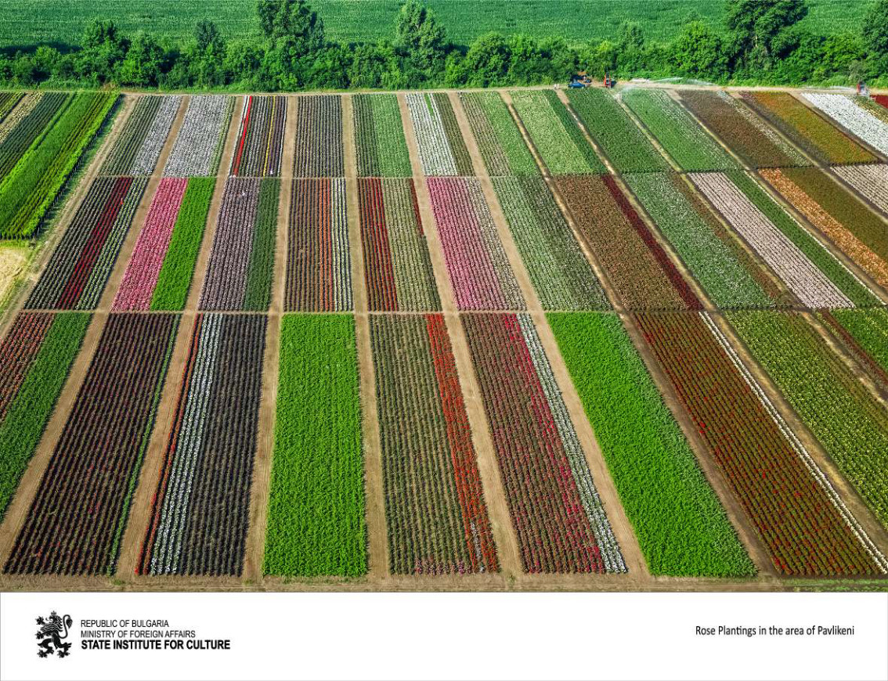

Illatos mezők
Pavlikeni térsége híres mezőgazdasági hagyományairól és színes virágültetvényeiről, amelyek tavasszal látványos mintázatot alkotnak.
Ухаещи полета
Районът на Павликени е известен със своите земеделски традиции и пъстри цветни насаждения, които през пролетта образуват впечатляващи шарки.
Fragrant fields
The area of Pavlikeni is known for its agricultural traditions and colorful flower fields that create striking patterns in spring.